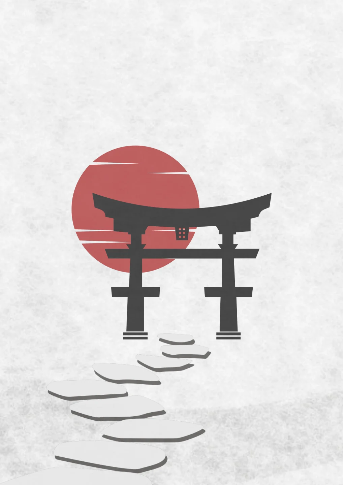
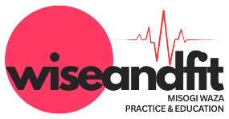
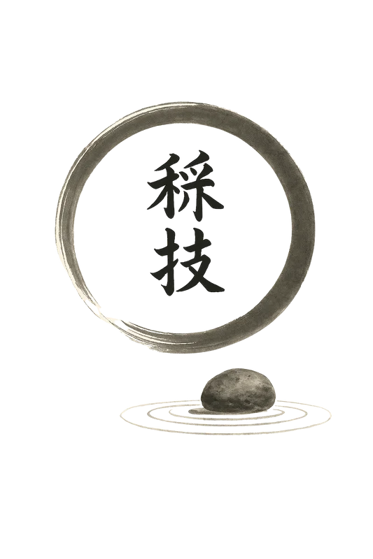
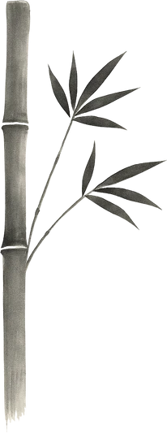
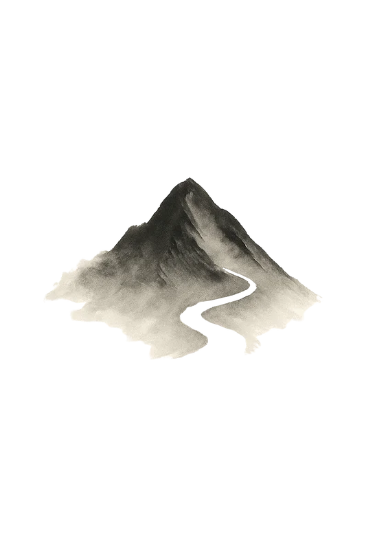
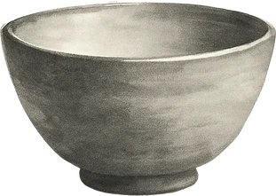
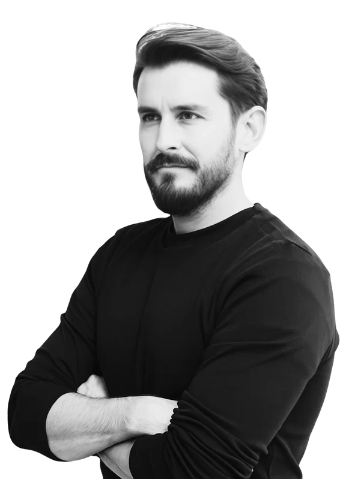

wiseandfit3.comMisogi Waza
Kurumsal Eğitim Programı
2026

Eğitim felsefesi
Bilgelik ve fit olma hali
Wiseandfit eğitim felsefesinin amacı bilgeliği ve fit olma halini ortaya çıkarmaktır. Gücünü Japon felsefesinin kadim öğretilerinden ve batı felsefesinin yöntemlerinden alarak hibrit bir yaklaşım sunmaktadır. Günümüzde modern insanın en temel ihtiyaçlarından biri olan bilgelik hali, insanın kendi karakter özelliklerini tanıyarak ait hissedeceği bir yaşam kurma becerisidir. Bilgelik, modern insanı mazeretlere sığınmadan tüm özellikleriyle sorumluluk alacağı bir zihin yapısına ulaştırır. Fit olma hali ise amaçlanan bu yolculukta değişen yaşam koşullarına uygun beden/zihin/ruh yapısını koruma becerisidir.
Wiseandfit felsefesi insanın bugününü şekillendirme çabasıyla temellendirilmiştir. İnsanın tüm gücünü, içinde bulunduğu güne odaklamasını ve bugün kim olmak istiyorsa bu amaca uygun yaşamasını amaçlar.
Misogi waza
Misogi; yosunlanmış, nefes alamaz hale gelmiş ağaçları yosunlardan temizleme işlemidir.
Wiseandfit felsefesinin yaşatılması misogi waza pratikleri ve eğitimleriyle sağlanır. Tüm uygulamalarımızın temelini oluşturan bu Japon eğitim sisteminin ana amacı, yaşam mücadelesi veren insanın tüm nitelikleriyle (beden/zihin/ruh) hafiflemesini sağlayarak bilgeliğe açık fit olma halini yaşamasıdır. Bu işlem Japon savaş sanatları felsefesinde insan eğitiminde kullanılmaktadır. Bu bağlamda eğitimlerimizin ana hedefi modern insana daha fazla yeti kazandırmak değil, yeni yetilere yer açmak için ağırlıklarından kurtulmasını sağlamaktır.
02
2026 programları
2026’da sunduğumuz eğitimler
- 武道BudoÇatışmasız İlişki Yönetimi ve Engel Aşma Stratejileri04
- 稽古Keiko Waza / KaizenGelişim Odaklı Yaşam Tarzı ve Uzmanlaşarak İyileşme05
- 変化Henka WazaZihinsel Esneklikle Yaşam Yönetimi06
- 代謝Metabolic ResetMetabolizmaya Uygun Yaşam Tarzı07
- 生甲斐Y Ekseninde YaşamModern İnsanın Anlam Arayışı ve Zaman Felsefesi08
03

01 Çatışmasızlık yolu
Budo
Çatışmasız İlişki Yönetimi ve Engel Aşma Stratejileri
İnsan, tarih boyunca yaşam mücadelesini ilişki ağları içinde sürdürerek hayatta kalmayı ve var olmayı öğrenmiştir. 1700’lerde ünlü Japon savaşçılar Samuraylar için de durum böyleydi. Yaşamlarını sıcak savaşların içinde geçiren bu savaşçılar Budo felsefesiyle zorlukları aşmayı başarmıştır. Hayat boyu çatışmasızlık prensibinin gerektirdiği karakter ve zihin yapısının işleneceği eğitim serisinde, günümüz iş hayatında yaşanan ilişki problemlerinin üstesinden minimum zamanda maksimum etki yaratacak şekilde gelinebileceği gösterilmektedir. Katılımcılar geleneksel savaş sanatı tekniklerinin gösterdiği öğretilerle soyut kavramları davranışlarına aktarmayı başarmaktadır.
Budo öğretisi; günümüzün ikili ilişkilerinde bireyi güvenli bir alanda tutmak, ilişkilerde uyumu yakalamak, etkili bir iletişimin anahtarları olan empati ve zamanlamayı geliştirmek gibi birçok konuda katkı sağlamaktadır. Özellikle kişinin saldırıya maruz kaldığını düşündüğü ilişki durumlarında kriz yönetimi yetisini geliştirmektedir. Bir ilişki çemberi içinde tamamen uygulamaya ve deneyime dayalı eğitim modülü davranışsal süreçlerin analizlerini içermektedir.
İkinci bölümde Japon savaşçıların aldıkları silah eğitimini de kapsayan tasarım, en basit ateşsiz silah olan “jo” (tahta sopa) ile saldırılar karşısında gerçekleştirilen hamlelerin altında yatan değerleri gözler önüne sermektedir. Eğitimi tecrübe eden iş insanları, 21. yüzyılın savaşçıları olarak dengeli bir ilişki için taşıdıkları silahların yani yetilerin değerini deneyimleyebilmektedir. Eğitimin güç aldığı Japon felsefesinin yanı sıra batı felsefesinin çözüm odaklı bakış açısını da içeren tasarım, hibrit bir bakış açısı sağlamayı amaçlamıştır.
04

02 Uzmanlaşarak iyileşme
Keiko Waza / Kaizen
Gelişim Odaklı Yaşam Tarzı ve Uzmanlaşarak İyileşme
Kronolojik olarak Keiko waza (Japon savaş sanatları gelişim felsefesi), Kaizen sürecinin hem ikizi hem de atası sayılmaktadır. Keiko waza ve Kaizen felsefelerini birbirine bağlayan yaklaşım; küçük iyileştirmeler ve devamlı tekrarlarla insanın uzmanlaşması, değişime açık bir zihin yapısına kavuşması ve bütünsel iyilik halinin sağlanmasıdır.
Uzmanlaşmayı tecrübe edecek katılımcılar, kendi kariyer yolculukları için yapılacak planlamalarla günümüz modern insanının geliştirdiği mutluluk ve motivasyon bağımlılığı gibi öz duvarlardan kurtulma şansı yakalamaktadır.
Tasarım, katılımcıların eğitim boyunca savaş sanatı konusunda uzmanlaşacakları bir sınav süreci üstüne kurulmuştur. Sınav yolculuğu esnasında gelişim için doğru hamleleri gerçekleştirirlerken aynı zamanda liderlik ve koçluk becerilerini gösterme imkânı bulmaktadırlar.
05

03 Zihinsel esneklik
Henka Waza
Zihinsel Esneklikle Yaşam Yönetimi
Japon savaş sanatları felsefesinde engeller karşısında farklı bakış açısına geçişi ifade eden Henka waza çalışmalarının temelinde psikolojik esnekliği oluşturma amacı yatmaktadır. Engelleri ve değişkenleri analiz edip perdenin arkasındaki ikincil çözümleri bulmak, günümüz iş insanlarının en büyük ganimeti olan zamanı ellerinde tutmalarını sağlar.
Henka Waza, savaş sanatları eğitimi şeklinde tasarlanmış olup davranış odaklı bir eğitimdir. Katılımcılar temel çözümleri uygularken sıkışan süreç içinde farklı düşünebilmeyi deneyimlemektedirler. Aynı zamanda tasarımın ana amacı zihinde esnek davranış kaynağı yaratmaktır.
Bu bağlamda henka waza ile batı biliminin buluştuğu ortak nokta olan düşünce ve duygularla, ortak bir yolculuk eşliğinde değer odaklı davranışlara kapı aralanmaktadır.
06

04 Metabolik denge
Metabolic Reset
Metabolizmaya Uygun Yaşam Tarzı
Yaşam boyunca tüm kararlarımızın ve davranışlarımızın değişmez şahidi, sahip olduğumuz nadide bedenimizdir. Bedenimizdeki tüm fiziksel ve kimyasal işlemleri yöneten sistemi metabolizma olarak adlandırırız. Metabolizmanın sağlığı ve dengeli yapısı, vereceğimiz kararların bizi mutlu etmesi için anahtar roldedir. Duygusal durumlarımızı, bilişsel süreçlerimizi ve fiziksel yeterliliğimizi metabolizmamız yönetir.
Bu modülde katılımcılar 4 ana metabolik sistem analizinden geçerken beden tiplerini tanıyacaklardır. Ayrıca metabolizmamızın işleyişi ve dengeli bir yaşam tarzı hakkında beslenme, egzersiz ve yaşam tarzı formüllerine sahip olacaklardır.
İş insanlarının yoğun dönemlerde metabolik yaşantılarını yönetebilecekleri bilgileri içeren eğitim modülü, iş hayatında verimliliğin artmasına yardımcı olmaktadır.
07
05 Anlam arayışı
Y Ekseninde Yaşam
Modern İnsanın Anlam Arayışı ve Zaman Felsefesi
Y Ekseninde Yaşam eğitimi farklı bir yaşam kurgusunu hayata geçirmeyi amaçlamaktadır. Günümüzde insanı ağırlaştıran, kısır bir döngü içine hapsedip anlamsızlığa, değersizliğe ve hareketsizliğe iten yaşam kurgusu yerine, Japon öğretileri ve batı felsefesi ile yeniden şekillenen farklı bir eksen yaratmaktadır.
Eğitim boyunca yaşam tarzını, iş hayatındaki başarıyı, özel hayattaki huzuru etkileyen birçok tanım analiz edilerek katılımcıların ezbere kabullerden sıyrılması sağlanır; ardından farklı fiziksel uygulamalar, yazı atölyeleri ve münazaralar eşliğinde konular pekiştirilmektedir.
Hayatın hangi aşamasında olurlarsa olsunlar yaşamı tekrar kurgulayıp daha hafif ve güçlü bir hikâye yazma şansını yakalayacak Y ekseni insanları; risk alan, motivasyon bağımlılığı yaşamayan, geçmişi biriktirmeyen, gelecekten korkmayan ve mazeretlere sığınmayan yaşam tarzları için ilk adımı bu eğitimde atacaklardır.
08

Eğitmen
Cihan Karaoğluol
Eğitmen & Yazar · Wiseandfit kurucusu
Wiseandfit eğitim felsefesinin kurucusu Cihan Karaoğluol’un yolu 2007 yılında ünlü bir Japon savaş sanatları eğitmeniyle kesiştiğinde tüm yaşam planını değiştirmiş, Amerika Birleşik Devletleri’nde bulunan Japon savaş sanatları tapınağına yerleşmiştir. Nippon-Kan Aikido Organizasyonunun kurucusu Gaku Homma Kancho’nun Uchideshisi (yatılı öğrencisi) olarak aikido, kenjutsu ve jojutsu alanlarında eğitim almaya başlamıştır. Uzun yıllar boyunca Budo ve Zen felsefesiyle eğitim alarak yatılı eğitim kamplarını başarıyla bitirmiş ve Nippon-Kan Aikido organizasyonunun uluslararası eğitmeni olmaya hak kazanmıştır.
Almış olduğu geleneksel Japon savaş sanatları eğitimi, Uzak Doğu felsefelerini içselleştirmesini sağlamıştır. Bu doğrultuda Japon felsefesi Budo’yu referans alarak “İnsanların yaşam mücadelesini kolaylaştırmayı” mesleki amacı olarak benimsemiştir. Yurt dışında ve yurt içinde askeri birlikler, polis teşkilatları, sivil organizasyonlar ve kurumsal firmaları kapsayan geniş bir yelpazede davranış odaklı eğitimler vermiştir.
Sunduğu eğitimler esnasında metabolik sağlığın, insanın karar ve davranışlarında güçlü bir etkisi olduğuna kanaat getirmiş; Prof. Dr. Ceyhun Dizdarer’in Metabolik Fitness yaklaşımını Türkiye’ye getirme projesinde görev almış ve 2013 yılından beri kendisiyle çalışmalarını sürdürmektedir. Bugün kurumsal alanda ve bireysel danışmanlık eşliğinde metabolik koçluk yapmaktadır.
Doğu ve batı felsefelerinin farklı ve ortak noktalarını daha iyi aktarabilmek için felsefe alanında akademik eğitimini tamamlayan Karaoğluol; Dünün Savaşçıları Bugünün Liderleri, Y Ekseninde Yaşam, B.A.B.A, Uchideshi-Tenchi Okulu ve Uçurum kitaplarının yazarıdır.
Bazı kurumsal referanslar
Bakioğlu Holding · Arkas Holding · Enda Enerji · Vestel · Eldor · Kalder · Schneider Electric · Yapı Kredi · İzgören Akademi · Promeda · Viessmann · Doğuş Otomotiv · Safe Spice · Sinerjik HR · Mavişehir Rotary · Arkas Spor Kulübü · Gram Equipment
09

Programınızı birlikte planlayalım
- E-posta
- info@example.com
- Telefon
- 0500 000 00 00
- Cihan Karaoğluol
- YouTube
- @kanal
Designed & powered by softburn.tech